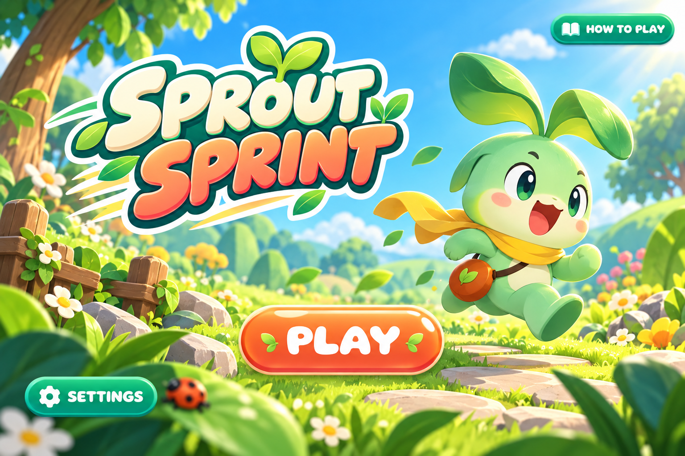
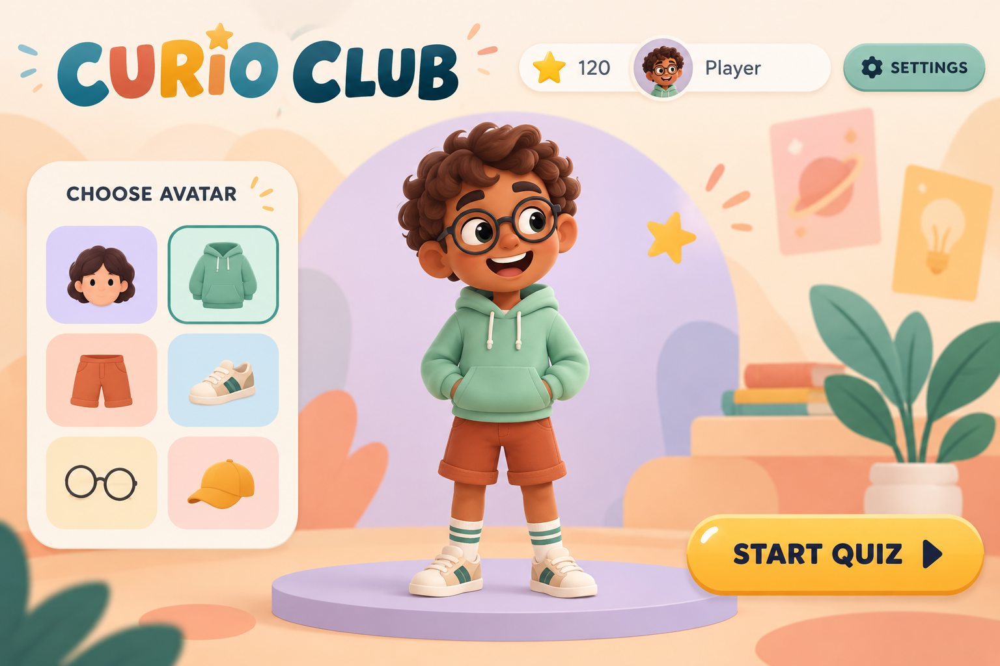

Game design / Development / Creative supervision
Educational games, from a brief to a playable build.
My initial work at MeeOpp combined game planning, design and implementation. I also hired and supervised a freelance game artist and coordinated the creative handoffs around the game.
- Focus period
- 2021–2024
- Earlier foundation
- Casual game development across studios
- My contribution
- Gameplay, implementation, artist hiring and supervision, art and animation coordination


Design and implementation
I worked across planning, gameplay and implementation, using playable builds to see how an interaction actually felt. I also led the Unity-to-Phaser and TypeScript migration for browser and mobile play, addressing device access and build size.
Hiring and supervising an artist
I onboarded the artist, briefed tasks, reviewed assets and coordinated how the artwork would fit the game and animation pipeline. The work included clarifying asset compatibility, reuse of frames and the formats another team needed.
A product trade-off from the game work
During a limited-time campaign discussion, I raised the risk that a long extension could weaken the intended urgency. A colleague brought evidence that some learners had discovered the campaign late. We considered those needs together as part of the release discussion.
Artwork and backend work involved colleagues. The supervision described here concerns one freelance game artist. The campaign discussion is an example of collaborative judgment, rather than a claimed retention result.